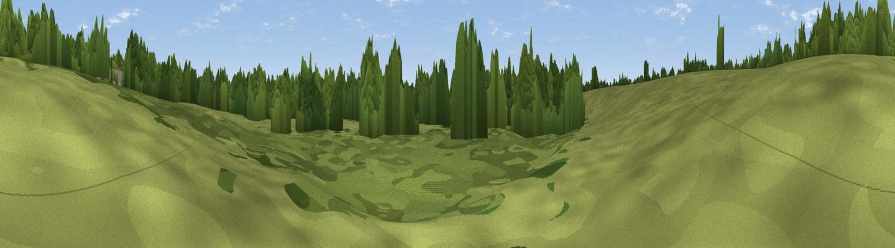

The Osier Bed
#45983 in England · top 86% of its area beats it · near SawbridgeworthWhere it is
The exact computed spot (TL 48223 13920). Click the marker for map links.
The view, rendered

A 360° render of this exact spot computed from the terrain model, tree cover and land cover — summer colours, afternoon light, calibrated against photographs of famous viewpoints. Real trees, hedges and buildings will differ in detail.
The panorama
Grey silhouette: terrain skyline in each direction (720 bearings, Earth curvature and refraction included). Dashed green: skyline with trees (+15 m) and buildings (+8 m) as obstacles. Blue strip: how far the ground is visible on each bearing.
Where the view opens
Wedge length = distance to the farthest visible ground on that bearing (vegetation-aware). Rings at 10, 25 and 50 km.
What fills the view
50% grassland · 36% woodland · 12% cropland · 2% built-up
Angular shares of the visible panorama (visual magnitude), not map area. Landscape diversity 0.45 (0–1 Shannon).
Key numbers
More beautiful places nearby
The staircase of upgrades: each row has a higher view potential than everything closer. Driving times are estimates from straight-line distance, calibrated against real road routing — check an actual route before setting out.
| Place | Direction | Drive | Score |
|---|---|---|---|
| Pole Hole Hill | WSW · 3 km | ~8 min | 13.5 |
| Rye Hill | SSW · 8 km | ~16 min | 19.0 |
| Viewpoint near Great Amwell | W · 10 km | ~20 min | 20.0 |
| Viewpoint near Lower Nazeing | SW · 11 km | ~22 min | 20.7 |
| Viewpoint near Bumble's Green | SW · 13 km | ~24 min | 26.5 |
| Viewpoint near Lower Nazeing | SW · 13 km | ~25 min | 28.5 |
| Viewpoint near Sewardstonebury | SSW · 18 km | ~32 min | 32.4 |
| Viewpoint near Sewardstonebury | SSW · 21 km | ~36 min | 32.7 |
51.80428, 0.14839 · source: osm viewpoint · position refined by local search. Computed location — check access rights before visiting.